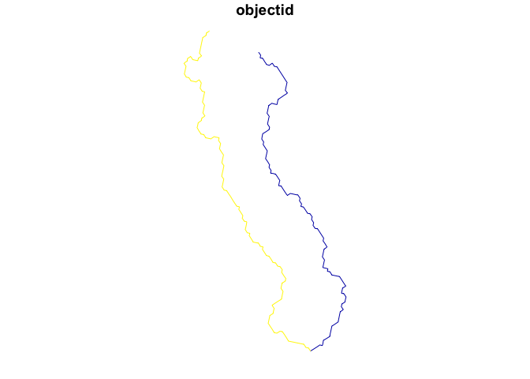

The goal of mapmaryland is to ease access to spatial data for Maryland at both the local, regional, and statewide level.
Installation
You can install the development version of mapmaryland like so:
# pak::pkg_install("elipousson/mapmaryland")Example
Currently, the package has a limited number of data access functions, prepackaged datasets, and reference data with an index of Maryland ArcGIS services.
dplyr::glimpse(md_arcgis_index)
#> Rows: 78
#> Columns: 13
#> $ name <chr> NA, NA, NA, "Baltimore City DPW", "Baltimore City DOT", N…
#> $ operator.abb <chr> NA, NA, NA, "DPW", "DOT", "BCIT", NA, "BCIT", "BCIT", "BC…
#> $ operator <chr> NA, NA, NA, "Department of Public Works", NA, "Baltimore …
#> $ city <chr> NA, NA, NA, "Baltimore", "Baltimore", "Baltimore", "Balti…
#> $ county <chr> "Allegany County", "Anne Arundel County", "Anne Arundel C…
#> $ state <chr> "Maryland", "Maryland", "Maryland", "Maryland", "Maryland…
#> $ state.abb <chr> "MD", "MD", "MD", "MD", "MD", "MD", "MD", "MD", "MD", "MD…
#> $ geography <chr> "countywide", "countywide", "countywide", "citywide", "ci…
#> $ source_type <chr> "county government", "county government", "county governm…
#> $ notes <chr> NA, NA, NA, NA, NA, NA, NA, "Used for Baltimore City CoDe…
#> $ public <lgl> TRUE, TRUE, TRUE, TRUE, TRUE, TRUE, TRUE, TRUE, TRUE, TRU…
#> $ services_url <chr> "https://alleganygis.allconet.org/allcogis/rest/services"…
#> $ hosting <chr> NA, NA, NA, NA, NA, NA, NA, NA, NA, NA, "ArcGIS Online", …
location <-
get_md_tigris(
name = "Hyattsville",
type = "census places"
)
location
#> Simple feature collection with 1 feature and 17 fields
#> Geometry type: MULTIPOLYGON
#> Dimension: XY
#> Bounding box: xmin: -8568784 ymin: 4713631 xmax: -8564592 ymax: 4719546
#> Projected CRS: WGS 84 / Pseudo-Mercator
#> statefp countyfp placefp placens geoid name namelsad lsad
#> 90 24 033 41250 02390603 2441250 Hyattsville Hyattsville city 25
#> classfp pcicbsa mtfcc funcstat aland awater intptlat intptlon
#> 90 C1 N G4110 A 7005779 68516 +38.9612045 -076.9549346
#> county geometry
#> 90 Prince George's County MULTIPOLYGON (((-8568783 47...
streams <-
get_water_data(
location = location,
type = "streams"
)
#> ✔ Downloading "Rivers and Streams - Generalized" from
#> <https://geodata.md.gov/imap/rest/services/Hydrology/MD_Waterbodies/FeatureServer/0>
#> Layer type: "Feature Layer"
#>
#> Geometry type: "esriGeometryPolyline"
#>
#> Service Coordinate Reference System: "EPSG:3857"
#>
#> Output Coordinate Reference System: "EPSG:4326"
plot(streams, max.plot = 1)